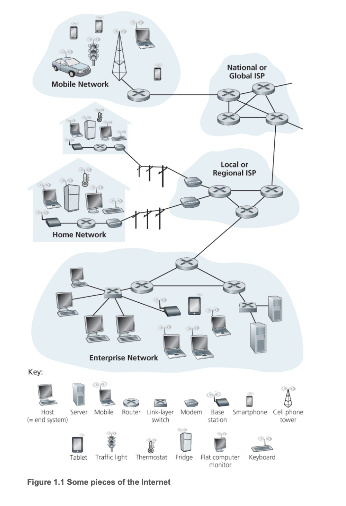
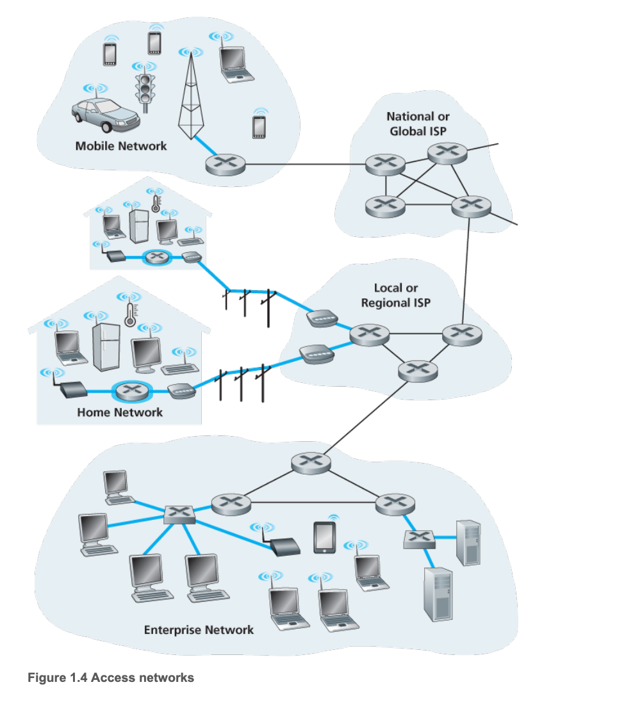
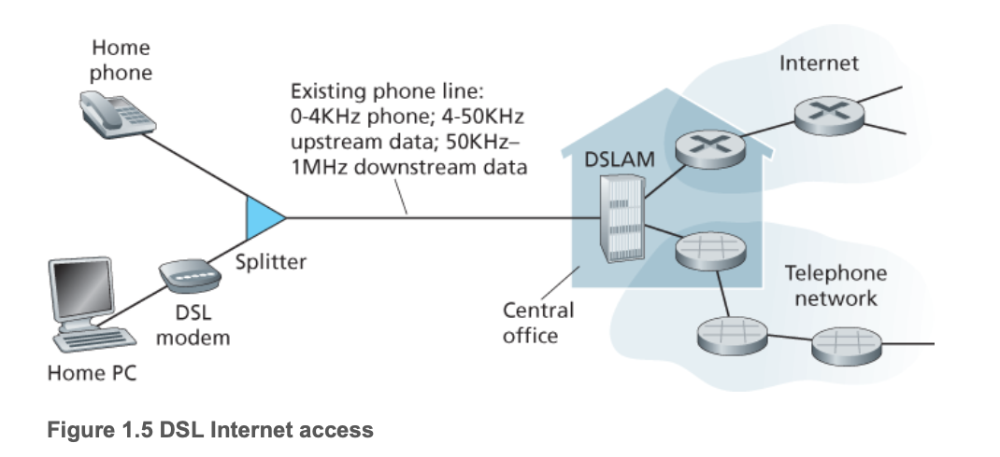
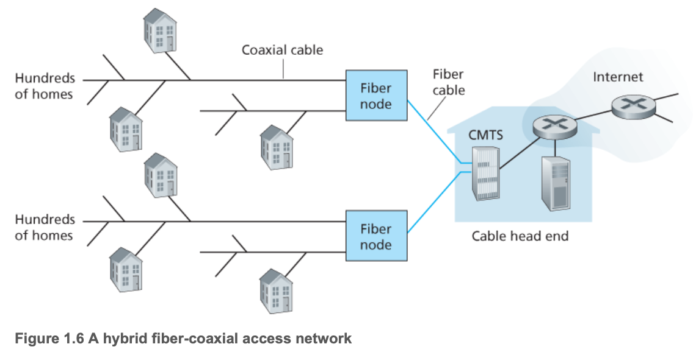
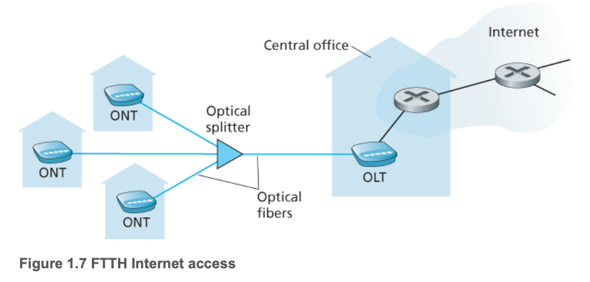
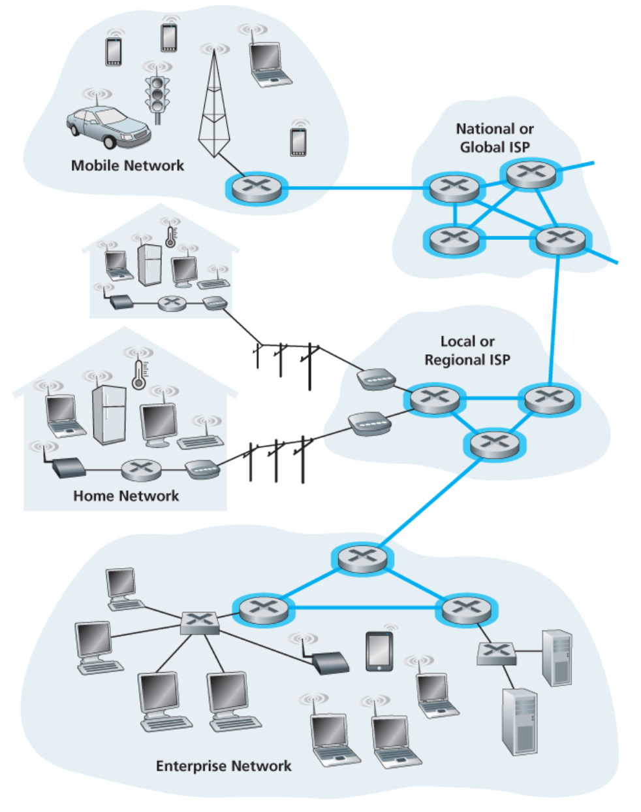
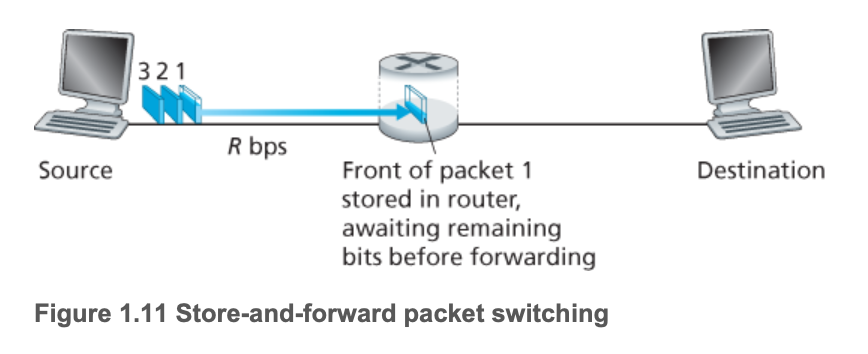

计算机网络和因特网
什么是因特网
具体构成描述
因特网 是一个世界范围的计算机网络，即它是一个互联了遍及全世界数十亿计算设备的网络。

接入网络的设备——网络边缘
- 主机（host） = 端系统（end system）
- 运行的联网 app
通信链路（communication link）——接入网
- 媒介：同轴电缆、铜线、光纤、无线电频谱
- 传输速率：带宽 bps
分组交换机（packet switch）——网络核心
- 路由器（router）和 链路层交换机（link-layer switch）
因特网服务提供商（Internet Service Provider,ISP）
协议：定义了在两个或多个通信实体之间交换的报文的格式和顺序，以及报文发送和/或一条报文或其他事件所采取的动作
网络标准
- 因特网工程任务组（IETF）： 制定网络标准的组织
- 请求评论（RFC）：IETF 的标准文档
服务描述
为应用程序提供服务的基础设施
即用户使用应用。应用程序编程接口
即编写应用
网络边缘（Network Edge）
与因特网相接的计算机及其他设备位于因特网的边缘，称为端系统。
端系统 = 主机，可以被划为下面两种：
- 客户（client）
- 服务器（server）：比如有企业存储大量数据的大型数据中心（data centers）
接入网（Access Networks）
网络边缘的端系统 通过 接入网（物理链路） 连接到 边缘路由器（端系统到任何其他远程端系统的路径上的第一台路由器）。
接入网的几种环境（家庭，公司，广域移动无线）

家庭接入：DSL、电缆、FTTH、拨号和卫星
数字用户线（digital subscriber line，DSL）
利用电话线路接入网络。其中 ADSL 是非对称的数字用户线，基本都用 ADSL，因为一般下行的数据量都远大于上行的数据量，所以要设计成非平衡的链路。
电缆因特网接入（cable Internet access）
利用有线电视网接入网络。结构上，通过粗的同轴电缆接入社区，再用细的同轴电缆接入每家每户。经常被称为混合光纤同轴电缆（HFC）系统。

- 光纤入户（Fiber to the home,FTTH）

- 卫星链路，拨号接入
采用独占的频分多路复用来传输。因为利用的是原有的电话线路，所以需要将 DSL 传输的网络信号（上行、下行）和电话信号通过频分多路复用来区分开来。
企业（家庭）接入：以太网和 WiFi
- 以太网：使用双绞铜线与一台以太网交换机相连，速率可达到 100Mbps、1Gbps、10Gbps。
- WiFi：IEEE802.11 技术无线 LAN，范围在几十米内。
广域无线接入：4G 和 5G
物理媒体
- 导引型媒体（guided media）：信号在固体媒体中传输，比如光缆、双绞铜线和同轴电缆。
- 非导引型媒体（unguided media）：电波在空气中传播，比如无线局域网或数字卫星频道。
- 双绞铜线
- 同轴电缆
- 光纤
- 陆地无线电信道
很短距离（个人设备）、局域（无线 LAN）、广域（蜂窝接入技术） - 卫星无线电信道
同步卫星、近地轨道卫星
网络核心
网络核心：由端系统的分组交换机和链路构成的网状网络。下图标亮部分即使网络核心。
一共有三种交换方式：报文交换（很少使用）、分组交换和电路交换

分组交换（Packet Switching）
- 存储转发传输
指在链路传输分组的第一个比特之前，必须接受到整个分组
